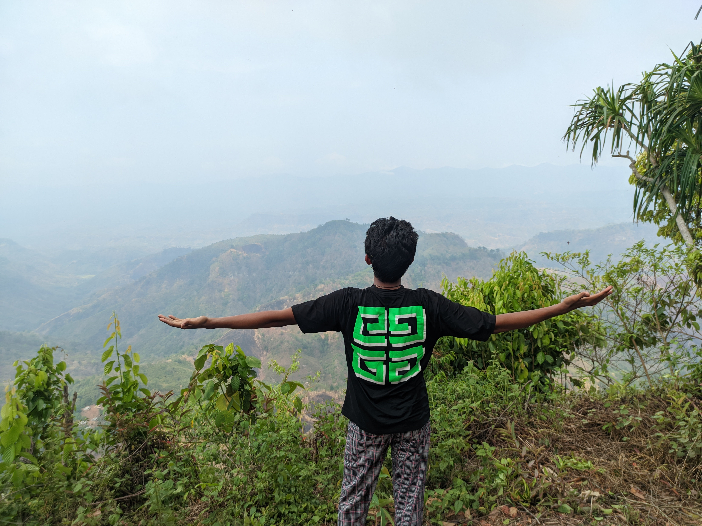
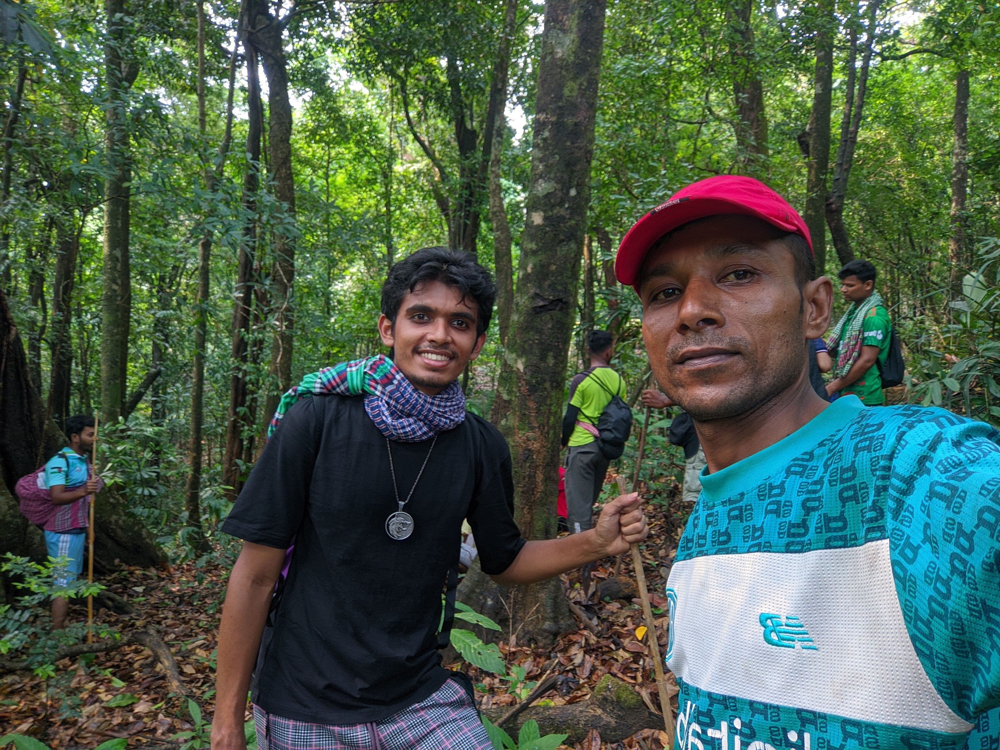
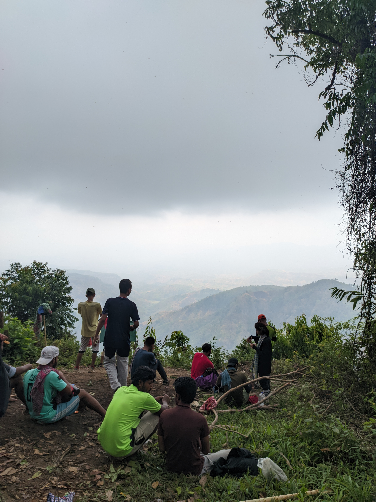

Kristong Hill
Published on:

Views:
The summit offers breathtaking panoramic views of the surrounding hills,
including the Sangu River in clear weather [Review of Chimbuk Hill,
Bandarban, Bangladesh - Tripadvisor, Travel Blog #1 -
Kristong (Peak of Chimbuk Hill Bandarban Summit) 2 may, 2024]
Gallery



Reaching Kristong Hill likely involves trekking, so some physical fitness is recommended.
Local guides are advisable for navigating the off-road trails [kirs taung chimbuk].